La Maison Rose
Francis Geere
11 Rue du Chateau, 25330 Nans-sous-Sainte Anne, Franche Comté, France
Telephone: +33 381 865 541
Mobile: +33 668 472 580
Further afield
There is a very great deal to see and to do in the wider area.
But, once started, I would find it difficult to stop. Let me, then, just briefly tour the near horizon.
First, to be clear, I should explain that the region of Franche-Comté, although embracing the Jura Mountains and Plateau geographically, consists administratively of the Départements of Jura, Doubs, Haute-Saone and the Territoire de Belfort. Nans is in Doubs but on the edge of Jura. My references to 'the Jura' are to mountains and plateau which are spread over both Doubs and Jura and extend into Switzerland too. Clear now?!
To the South-West
Between Nans and Salins-les-Bains 8 miles (13 kms) away is Mont Poupet. Pack your picnic, follow a wooded road steeply uphill to the cross and, onwards and upwards, to the summit to enjoy a superb view over the countryside, to see Mont Blanc (100 miles or 160 km away) on a clear day, or just to watch the hang- and para-gliders taking off from the mountain.
Salins-les-Bains from Mont Poupet
Proceed to Salins-les-Bains where you can take a thermal bath, visit the ancient salt mine (a UNESCO World Heritage site) and one of the two fortresses overlooking the town. One has a tree-top adventure park. You can also inspect the numerous artisanal potteries (e.g. Dangon and Ludovic) on the road out towards Dole. Some historians argue that this was the setting of the siege and battles in 52BC in which Caesar's defeat of the Gaulish forces under their chief, Vercingetorix, sealed his conquest of Gaul. From the surrounding heights it is not difficult to credit it.
Not far away to the West is the Saline Royale (Royal Saltworks) at Arc-et-Senans, another UNESCO World Heritage site, designed to introduce social equality amongst the various workers involved in the salt production process. Alas, the grand design was only half-completed thanks to the outbreak of the Revolution in 1789 when money was scarce and social equality was, in any case, enshrined in the national constitution. The half that exists today reflects a rare sense of classic grandeur in the depths of our countryside.
Five minutes' drive beyond Salins-les-Bains brings you into the northern end of the Arbois and Cotes-du-Jura wine-growing area (see the Food and Drink pages). Pretty little villages set in their vineyards are prolific. Montigny-les-Arsures and Pupillin are typical examples.
Arbois, some 25 minutes from Nans, prospers from the wine-trade and abounds in wine-tasting opportunities. Its Musée de la Vigne et du Vin at the Chateau Pécauld offers an exhibition of the history and techniques of local wine-making.
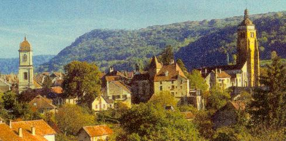 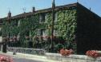
General view of Arbois and of Pasteur's house there
Arbois was also the home of Louis Pasteur whose early experiments in pasteurisation were performed on the wines of his own vineyard just above the town. Visit his home and laboratory - and his own personal vineyard too.
Take the Route des Vins along the beautiful vineyard-strewn slopes of the Révermont.
Visit, too, the gorge and caves of Les Planches and Moidons just beyond Arbois.
To the North-East
20 minutes’ motoring from Nans brings you to the spectacular valley of the River Loue which, like our Lison, also emerges fully formed from a cave. This merits three Michelin stars. The canyon of the upper valley offers superb unspoiled walking. Further down, canoeing pre-dominates.


The upper Loue valley
At Ornans down-river you can visit the riverside home (now an art museum) of the artist Gustave Courbet ‘the Father of the Impressionists’. Courbet painted many local scenes (including the Source of the Lison) many of which are sign-posted as you tour the Loue Valley.
The River Loue at Ornans…… ….................................…… …..and at Cléron
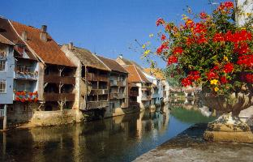 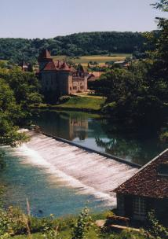
To the North
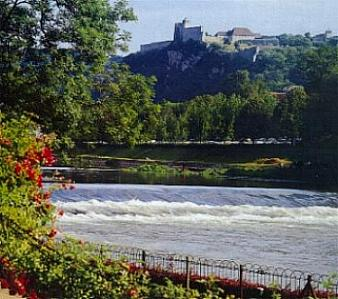
River Doubs and Citadel from the riverside Parc Micaud in Besançon
Besançon, 40 minutes by car from Nans, is our ‘county town’. It offers good shopping, riverboat rides on the Doubs, beautiful riverside parks, Roman remains, and at least 6 Museums (including a harrowing one featuring the local Resistance and Deportations in WWII). Most of the museums – and the zoo - are in the Citadel set majestically high up above both river and town, and spectacularly illuminated at night. Find out more about Besançon here and here.
The Doubs river valley, both up- and down-stream from Besançon is beautiful and worth exploring. It forms part of the Eurovelo6 (Atlantic to the Black Sea) cycle route.
About 12 miles (20kms) downstream from Besancon you will find the riverside Grotte d'Osselle caves.
A few miles to the South-East of Besancon, the open-air museum at Nancray offers 30 examples of traditional farm and residential architecture in Franche-Comté.
Rater further to the North-East you can visit both the Chapel of Ronchamp (designed by Le Corbusier) and the fascinating Peugeot Museum at Sochaux.
Higher up in the Jura (to the South and South-East)
In the Haut-Doubs, Pontarlier, 30 minutes from Nans, is the gateway to our largest local lake, the Lac Saint-Point. Here, because outboards are forbidden, swimming, sailing, rowing, canoeing, and wind-surfing can be enjoyed in clean and tranquil water. Its smaller neighbour, the Lac de Remoray is a wildlife sanctuary. Nearby Mont d'Or, as high as Ben Nevis, looms over the ski-resort of Métabief (which has a long summer toboggan run) and offers a 360 degree panorama including five Swiss and French lakes (as well as the Alps and the Bernese Oberland!) all at once.
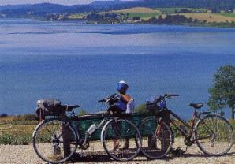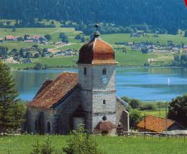
Views of the Lac St. Point
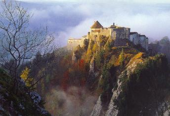
The medieval Chateau de Joux, guards the passes into Switzerland, and hosts an annual summer music festival. It has been 'home' to several notable prisoners, and is visitable during most of the year....but take a pullover for the dungeons!
In the Haut-Jura, Les Rousses is a holiday resort for mountain walking, golf, swimming and winter ski-ing (downhill and cross-country). Nearby you can visit museums of traditional local industries: wooden implements (Bois d'Amont), Morbier cheese (Morbier), spectacles (Morez), and pipes (St.Claude). You can also visit the Comté cheese refinery in the local fortress, and your children can enjoy a treetop adventure trail there.
Pontarlier and Les Rousses are handy access points to some of the highest points of the Jura range with, potentially, truly breath-taking views, in all seasons, over the Swiss plain and the Alps.
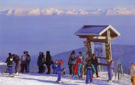 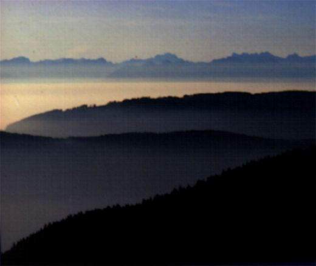
From the summits of the Jura mountains above Pontarlier and Les Rousses
The Swiss border is 45 minutes from Nans via Pontarlier. Geneva, Lausanne, Montreux, Neuchatel and Berne, as well as their lakes, can all be reached within 2 hours. Passports no longer need to be shown as you cross the border. Trips around the Lake of Geneva, to the Bernese Oberland, Basle, Lucerne, Gruyères and other Swiss delights can each be enjoyed within a day’s leisurely motoring.
The Black Forest in Germany is within 3 hours by car, but Austria and Italy will take nearer 4 hours, I’m afraid! In other directions, on the other hand, the French Alps, Alsace and Burgundy are also very accessible for a day's outing.
The Michelin guides to the Jura and to Switzerland are highly recommended for a more comprehensive view of the possibilities and pleasures. The local Tourist Information offices (Salins, Arc-et-Senans, Ornans, Arbois, Pontarlier, Besançon and, for Switzerland, Vallorbe and St Cergue) have abundant information. So have the apartments here!
Here, I have barely scratched the surface, and you can only do so much in one visit.
Perhaps you’ll want to come again!
In conclusion
Our area is lightly populated, but apparently the most densely wooded in all of France. It is only gradually being discovered by tourists, and it follows that you will find it neither very crowded nor, yet, excessively sophisticated. When did you last see a full panoply of stars at night or drive for 10 minutes without seeing another car? If this, along with good food, clean fresh air and exercise, simple solitude and traditional values, appeals to you, then what can I say except …
Here I am, and
Welcome!
to
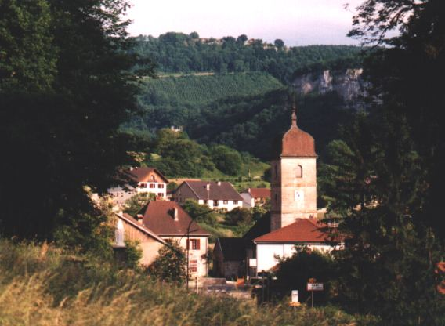
Nans-sous-Sainte Anne (lest you have already forgotten!)
Francis Geere
September 2011
On other Pages:
|
The Surroundings |